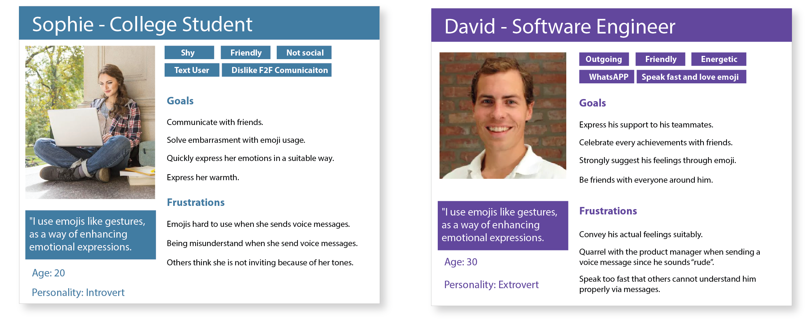
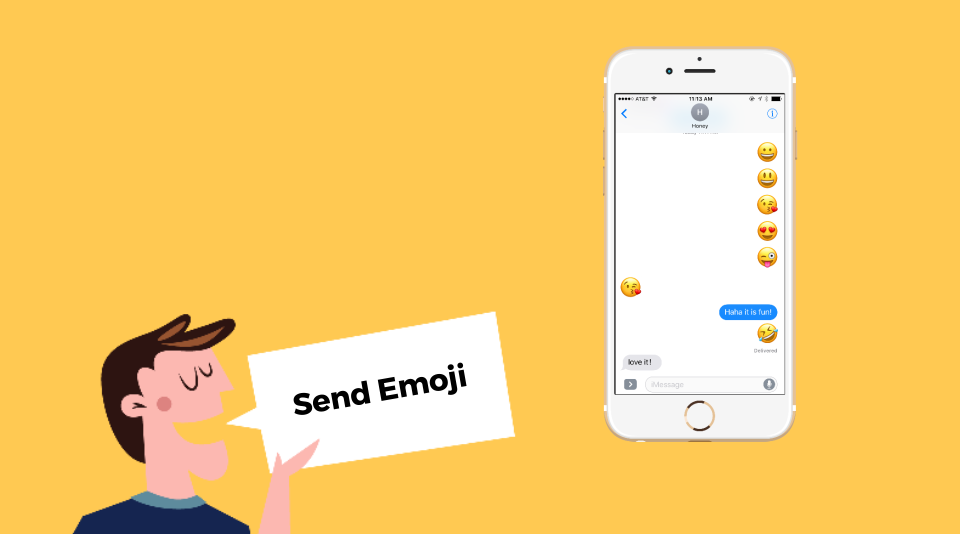
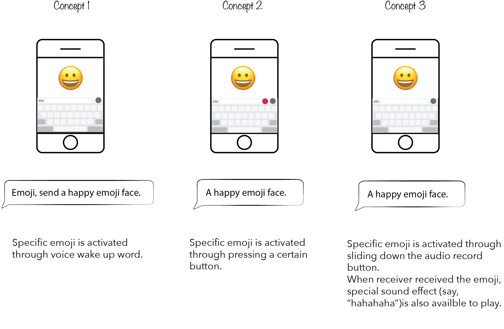
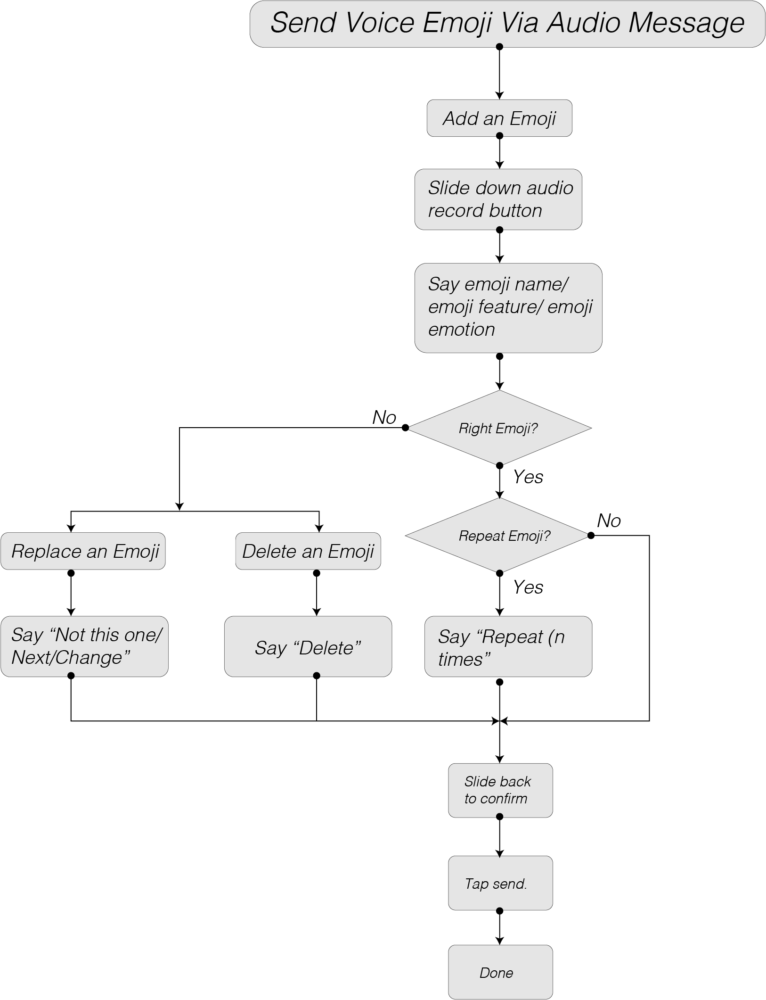
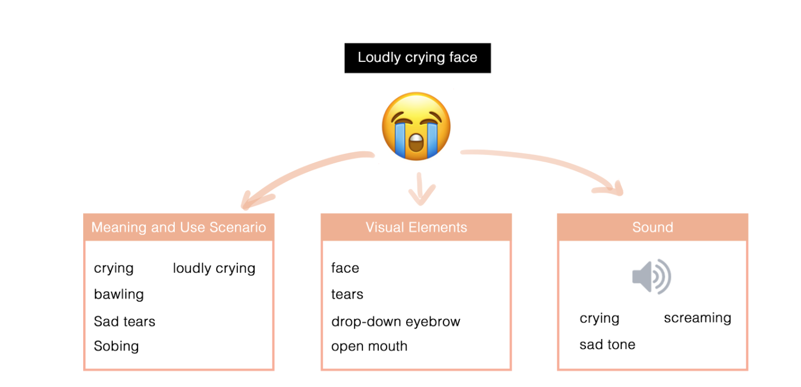
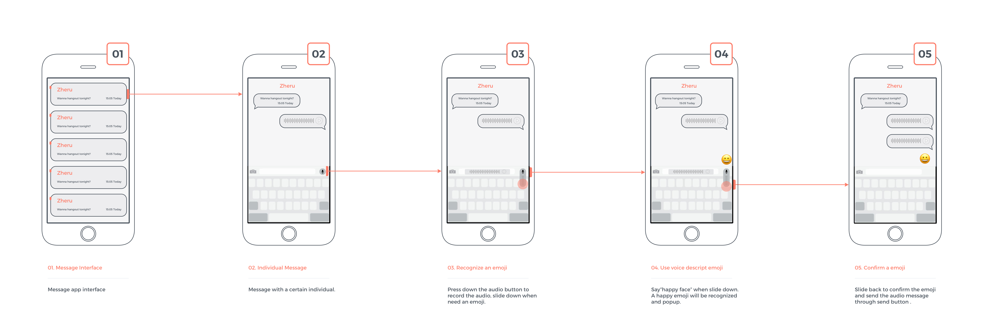
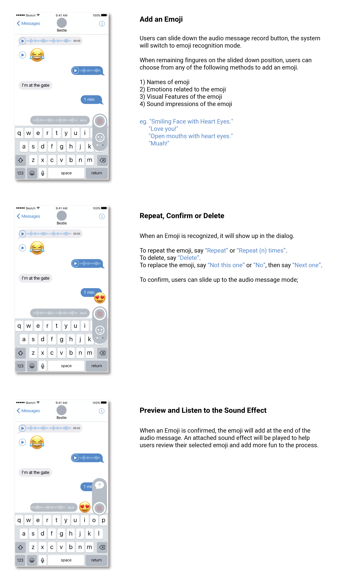

Voice Emoji Use your voice to send emoji with interesting sound effect.
About
The project task is to explore a potential scenario to drive auditory design in 2 weeks time for Georgia Tech Sonification Lab. I collorated with Zheru Jiang in interface designing and demo making.
Our final outcome include a short video and a Principle demo to send out to TAs and students, which inspires the lab in speech recognition design in audio message.
Low Efficiency In Setting Expection for Audio Message
When users use current audio message input, assistive emotion expression tools like emoji are hard to use. Users need to stop audio recording process and switch to a traditional keyboard input method. They need to stop recording message, tap on the emoji selection panel where everything is small, recognize the emoji icons and select the right one. This task is extremely difficult for the ones who don’t have both of their hand free or on a moving action. We aim to design an audio interface to help them use the assistive emotion expression tool like emoji on the audio messaging apps.
Audio Message Lovers
Our main users are people who use audio messages and emoji, including Slack users, iMessage users, WeChat users and so on. We aim to provide these users a seamless experience in using the audio messages to input assistive message tools like emoji.

Design Solution
We aim to use the auditory user interface that involves speech-based input by the user to generate non-speech output (emoji) from the system. The design requirements we generated from persona and previous research include
1) The design will be a seamless user experience;
2) The design will be intuitive enough and easy to learn;
3) The design will be interesting enough and add joy to the texting process.
Using Scenario
When users use emoji in text messages it can happen anywhere, from the beginning of texting to the end of texting. Emoji can appear once or even multiple times. We define the process of using voice to recognizing emoji as "Voice Recognizing Emoji Process" to differentiate it from traditional audio messages.

Wake Up Mechanisms
With these scenarios in mind, we brainstormed several wake-up mechanisms as follows.
Concept 1 Use specific word as the wake-up word.
e.g. "Emoji, send a happy emoji face."
"Emoji, delete the happy face."
Concept 2 Use a specific button to activate the recognizing process.
e.g. (Press down specific button)+"Send a happy emoji face."
Concept 3 Leverage current audio message button to activate the recognizing process.
e.g.(Slide down the audio record button)+"Send a happy emoji face."
Through discussion, we discovered that concept 1 has higher technical requirements and a higher error rate if the system cannot recognize the Wake-up word. Also, the voice command has high potential to be recorded as part of the audio message. Users have to play the audio message to know if the system recognizes the emoji successfully, which will add user frustration.
Concept 2 and Concept 3 are more feasible according to current technology. However, Concept 3 is more intuitive since it minimizes user finger movements and won't interrupt natural user audio message input process. Users can switch between audio message record process and emoji recognize process more easily.

Utterance Word Design
Aside from adding an emoji to an audio message, users also need to delete an emoji, replace an emoji or the system can predict an emoji according to iOS emoji usage guidelines. We identified the following utterances to suit for these typical usage scenarios.
1) Add an emoji. (Default mode)
2) Repeat an emoji.
"Repeat" or " Repeat (n) times." ----> "Repeat" stands for add the same one twice.
"Repeat (n) times" can be customized by users.
3) Replace an emoji.
" Not this one." /"Wrong."/"No" ----> Delete the recognized emoji.
"Next one." ----> Show the next alternative options.
"Change." -----> Confirm change to user selected one.
4) Delete an emoji
"Delete."

Emoji Recognition
Due to the limited time, we started from the most popular emoji and started design dialog for them. We categorized these most popular emoji as the following themes.1) Emoji with faces.2) Emoji with hearts. 3) Emoji with hands. 4) Others. We searched for online resources to determine the natural user languages in describing these emojis. We used Emojipedia (https://emojipedia.org/) as our main reference along with online text message history screenshots.
To cater for the needs of the largest population to input various audio messages, we considered three alternative voice input methods to ensure all the users can activate the right emoji with their language habits. * Machine learning technology can be used to meet this goal.
1) Names of emoji, eg. "Happy Face."
2) Emotions related to the emoji, eg. "I am super happy now."
3) Visual Features of the emoji, eg. "Emoji with open mouth."
4) Sound impressions of the emoji. eg. "Hahaha."
In this way, each emoji will have a 3-dimensional dictionary that links them to the meanings, and visual elements and sounds. Using this dictionary, the system can locate the emoji that users are looking for, and show it on the keyboard for users to choose.

Wireframe
In the process of wireframe, we discovered that the system needs to put users in control when an emoji is recognized. An emoji wait status above the record button is added, providing users ability to judge and proceed with either confirm, change or repeat. When the emoji is added, it will jump to the message box waiting to be sent out.

Interface Design
In the process of wireframe, we discovered that the system needs to put users in control when an emoji is recognized. An emoji wait status above the record button is added, providing users ability to judge and proceed with either confirm, change or repeat. When the emoji is added, it will jump to the message box waiting to be sent out.

Interaction Demo Video
To try our interactive demo on a Mac, users have to download the prototype to their own computer due to the share limits of Principle Software.
The link to download it is
Users can also watch our demo video to show the final design.